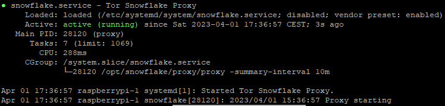

Install Tor Snowflake on the Raspberry Pi with DietPi. (2023) (01.04.2023)
This is a guide for installing a tor snowflake on your Raspberry Pi as systemd service.
Tor snowflake: "Allows people from anywhere in the world to access censored websites and applications."
Requirements
I have certain requirements for this guide. Using this guide on any other system is properly unsupported! Use at your own risk.
- DietPi version v8.15.2 or above
- Debian version based on bullseye (check with
cat /etc/os-release)
Notice that I am creating this guide from the view of a User account with sudo rights and a headless setup.
Install GO
First, we need to install Go version 1.13 or higher.
We install Go using:
sudo dietpi-software
now search for go and select the following by pressing space. Go: Runtime environment and package installer
After that press TAB and select confirm, when back on the main page select install
Now reload your shell by running exec bash or reconnect.
To verify the Go install run go version, it should output something like go version go1.20.2 linux/arm64. Just make sure that the version is 1.13 or higher.
Snowflake
Now we can start to install the snowflake.
First change to the /opt directory: cd /opt
Notice the sudo in front!
Start by cloning the Git repository:
sudo git clone https://git.torproject.org/pluggable-transports/snowflake.git
and then get ownership of the folder:
sudo chown -R $USER:$USER snowflake/
Now we can start to build the program itself:
cd snowflake/proxy && go build
To verify that the build is working, run ./proxy. The output should look like: 2023/04/01 15:29:14 Proxy starting
Autostart
To autostart the program, we are going to use systemd.
Start by creating a new user:
sudo adduser --no-create-home --disabled-login snowflake
This will create the user snowflake, but we still need to give the user access to the snowflake folder:
sudo chown -R $USER:snowflake /opt/snowflake
and
sudo chmod -R 775 /opt/snowflake/
Create the systemd service file like this:
sudo nano /etc/systemd/system/snowflake.service
With the following content:
[Unit]
Description=Tor Snowflake Proxy
After=network.target
StartLimitIntervalSec=0
[Service]
LogLevelMax=6
Type=simple
User=snowflake
SyslogIdentifier=snowflake
StandardOutput=journal
StandardError=journal
ExecStart=/opt/snowflake/proxy/proxy -summary-interval 10m
Restart=on-failure
RestartSec=120
TimeoutSec=300
PrivateTmp=true
NoNewPrivileges=true
ProtectSystem=strict
ProtectHome=false
ReadOnlyDirectories=/
ReadWriteDirectories=/opt/snowflake/
[Install]
WantedBy=multi-user.target
To verify that everything is working as intended, run: sudo service snowflake start and after that sudo service snowflake status.
The output should look like this: 
To enable the automatic start on reboot, run:
sudo systemctl enable snowflake.service
Logs
This section is useful if you want to have usage logs.
We start by editing the rsyslog config: sudo nano /etc/rsyslog.d/50-default.conf and add the following line
:programname,isequal,"snowflake" /var/log/snowflake.log
To apply this change, restart rsyslog: sudo service rsyslog restart.
To see the new log, wait up to 10 minutes or restart the snowflake service like this: sudo service snowflake restart.
You can now see the log like this: sudo tail -f /var/log/snowflake.log or this: sudo cat /var/log/snowflake.log.
After some time the log should have lines like: 2023/04/01 15:54:08 In the last 10m0s, there were 0 connections. Traffic Relayed ↓ 0 KB, ↑ 0 KB., these indicate the usage of the proxy you are hosting.
Logrotate
Logrotate is used to keep older logs and compress them with a defined limit.
Start by creating a config file for snowflake: sudo nano /etc/logrotate.d/snowflake with the following content:
/var/log/snowflake.log {
su root root
daily
rotate 5
compress
delaycompress
missingok
postrotate
systemctl restart rsyslog > /dev/null
endscript
}
To finalize everything, reboot the system: sudo reboot.
archive
The following links are archived versions, as the main ones could break.
https://snowflake.torproject.org/
https://go.dev/
Back to top